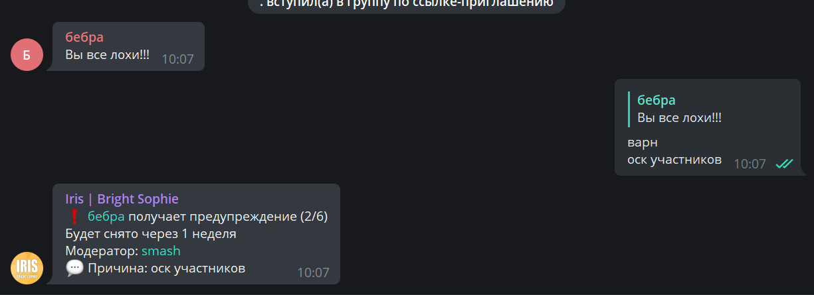
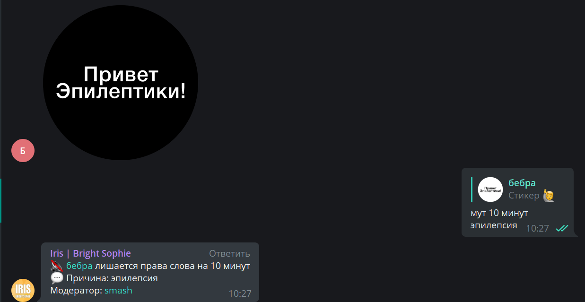
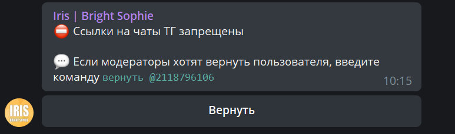
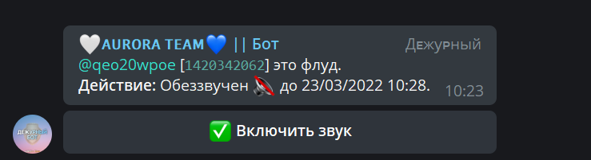
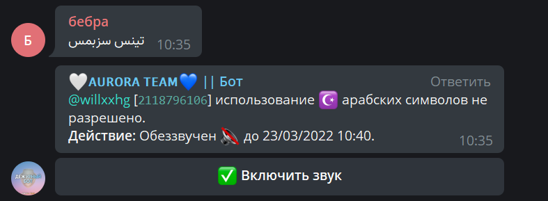
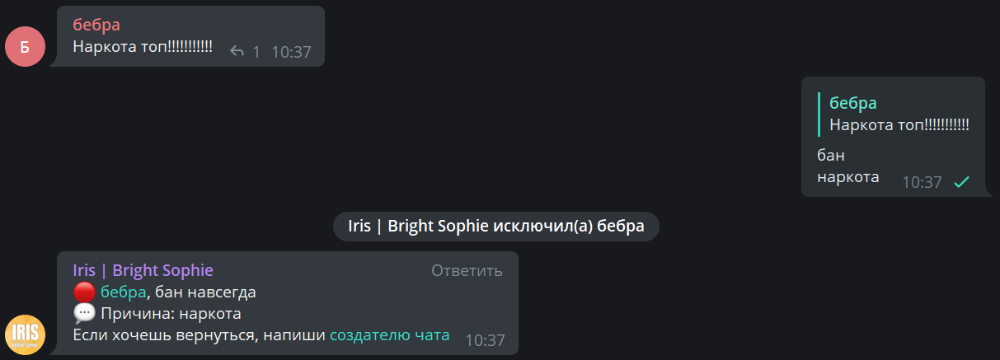
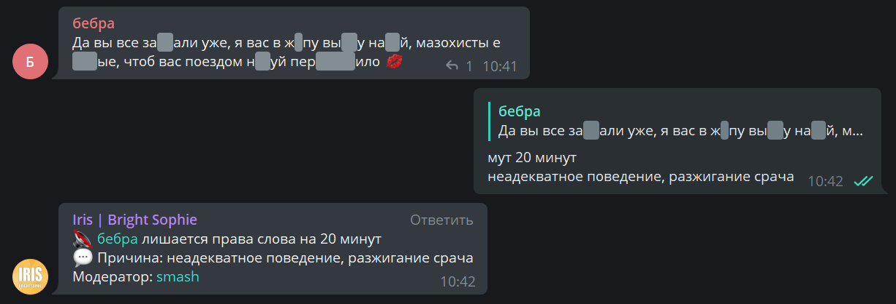
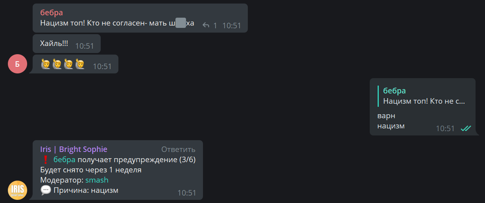
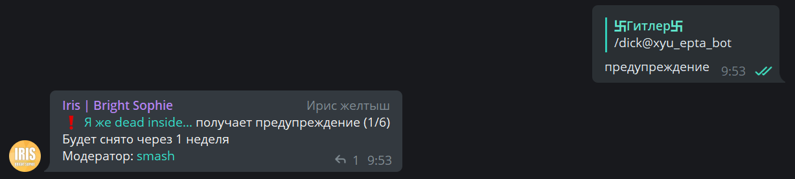

Правила чатов и голосового чата Хауса
>>>Вернуться к содержанию>>>
1.1. Группа для участников - приватизированная группа для участников Хауса, предназначенная для общения, обсуждения организационных моментов и съемок видеороликов;
1.2. В чате Хауса разрешается общаться в чате круглосуточно 24/7, играть, общаться по голосовому чату;
1.3. В чате Хауса запрещено:
1.3.1. Любые оскорбления, задевание самолюбия, чужих чувств и взглядов;

1.3.2. Присылать в группу сообщения порнографического содержания, треш-контент, шок-контент (скримеры, эпилептические GIF-ки или стикеры), эротический контент;

1.3.3. Спамить: пиар, реклама продажи аккаунтов, подозрительные ссылки на источники Telegram (исключения: видео в TikTok, подписка);

1.3.4. Флудить: присылать бессмысленные сообщения, смайлики, буквы, стикеры, эмодзи, флуд ботом, мрп и рп команды через ИРИС Бота (более 6 раз);

1.3.4.1. Спамить реакциями в ответ на сообщения пользователей в группе (например: ❤, 🔥, 🤡 и т.д.);
1.3.5. Спамить в чате иностранными языками, кроме русского (арабский, украинский, китайский и т.д.);

1.3.6. Поднимать тему наркотических и психотропных веществ, их употребление и распространение;

1.3.7. Намеренное разжигание конфликтных ситуаций, неадекватное поведение, грубость;

1.3.8. Избегать полученного наказания хитростью, т.е. путем добавления нового аккаунта в чат;
1.3.9. Поднимать тему нацизма, призывать к нацизму, присылать фотографии со свастикой;

1.3.10. Использовать ники со свастикой; использовать ники или присылать тексты, ломающие чат;

1.3.11. Обсуждение политики, членов политических партий и организаций, пропаганда политических взглядов, разжигание ненависти к правительству стран, любой контент, содержащий материалы политики.
1.3.12. Обсуждение хода специальной военной операции на Украине, оскорбления, направленные другим нациям, гражданинам других стран.
1.4. Правила голосового чата Хауса:
1.4.1. Голосовой чат - чат, который входит в группу для участников, где можно общаться при помощи микрофона в режиме реального времени, проводить видео-трансляции и многое другое;
ВАЖНО!!!: Все правила, описанные в пункте 1.3 Настоящих правил будут иметь отношение к голосовому чату и будут выдаваться одинаковые наказания в соответствии от нарушения.
1.4.2. Во время съемок видео в Голосовом чате ЗАПРЕЩЕНО издавать посторонние звуки: помехи, эхо, громкие звуки и т.д.
>>>Вернуться к содержанию>>>